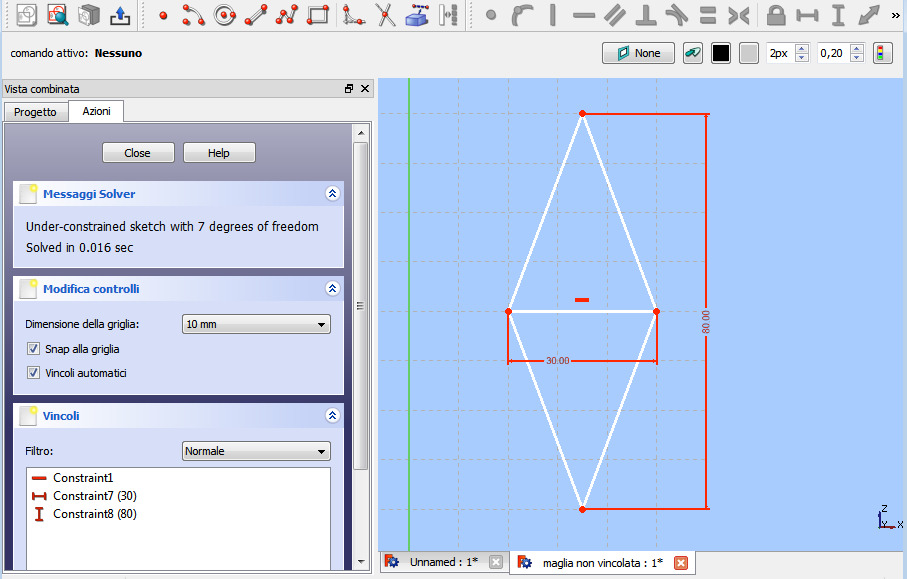
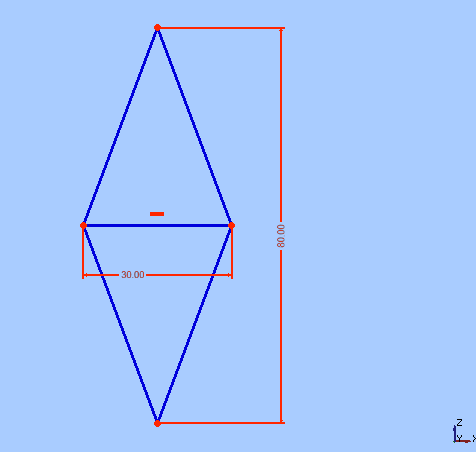
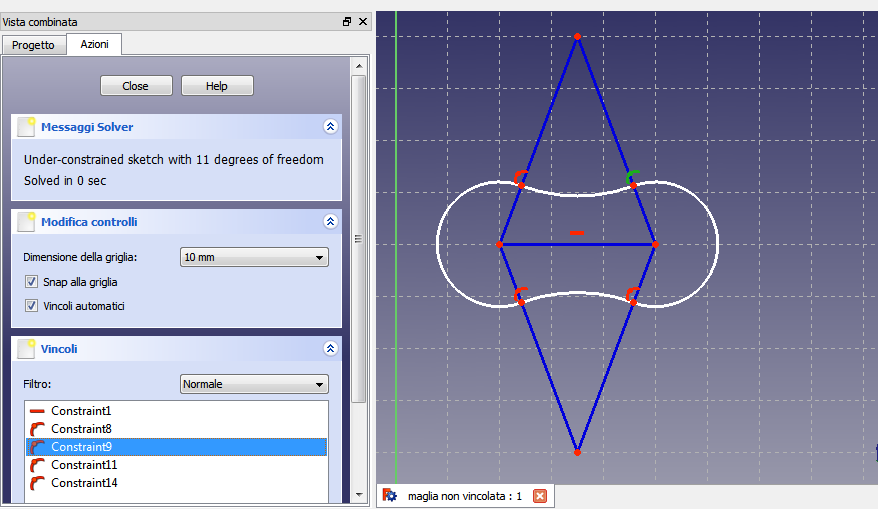
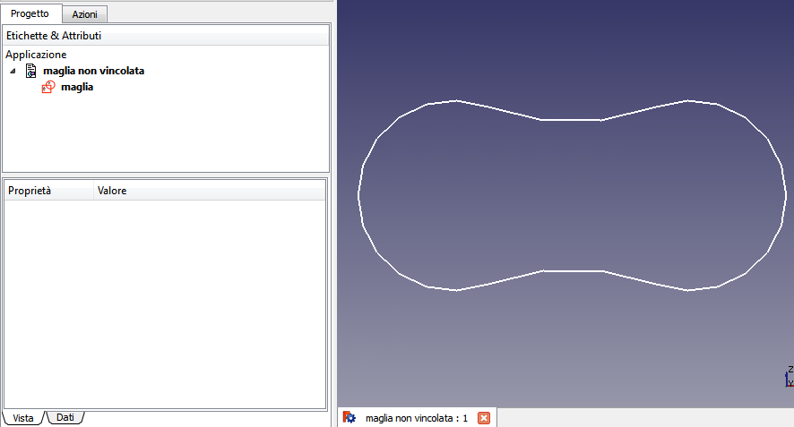

Soluzione1
pagina in costruzione
Costruzione di contorno non vincolato
_
_
Preparare l'ambiente
- Avviare l'ambiente Sketcher
- Creare un Nuovo file (documento)
- Cliccare sull'icona Crea un nuovo sketch. Si apre il dialogo per l'orientamento
- Scegliere il piano XZ
- Impostare una griglia con maglie di 10 mm
- Ruotare la rotella del mouse per ingrandire la griglia
- Premere Ctrl+Alt + destro del mouse e spostare la griglia
- Attivare Snap alla griglia
- Attivare Vincoli automatici
Disegnare le linee di costruzione
- Selezionare lo strumento Polilinea e tracciare un rombo
- Con lo strumento Linea tracciare la diagonale minore
- Fissare i punti quando quelli presenti assumono il colore bianco

- Selezionare tutte i segmenti del rombo
- Cliccare sullo strumento Linea di costruzione
- Notare che tutti gli oggetti assumono il colore blu

Disegnare il contorno
- Avviare lo strumento Arco e con centro nei vertici del poligono tracciare gli archi del contorno
- Notare il prodursi dei vincoli automatici

- Chiudere lo strumento Schizzo
- Notare che è visibile solo il contorno

- Rinominare lo schizzo in Maglia
- Notare che attribuire dei nomi descrittivi agli oggetti è molto utile
Torna a Esercitazioni
Navigation menu
{kind=link}
{kind=link}
{kind=link}
{kind=link}